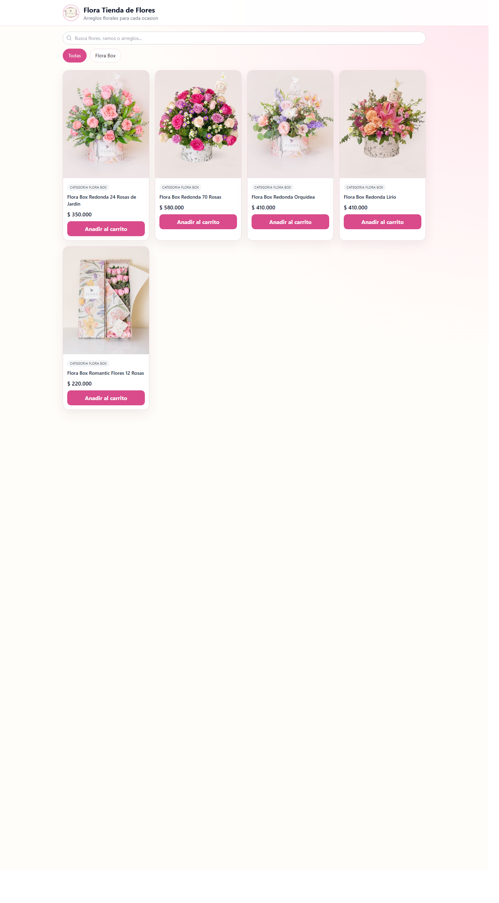
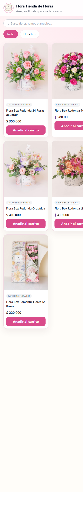
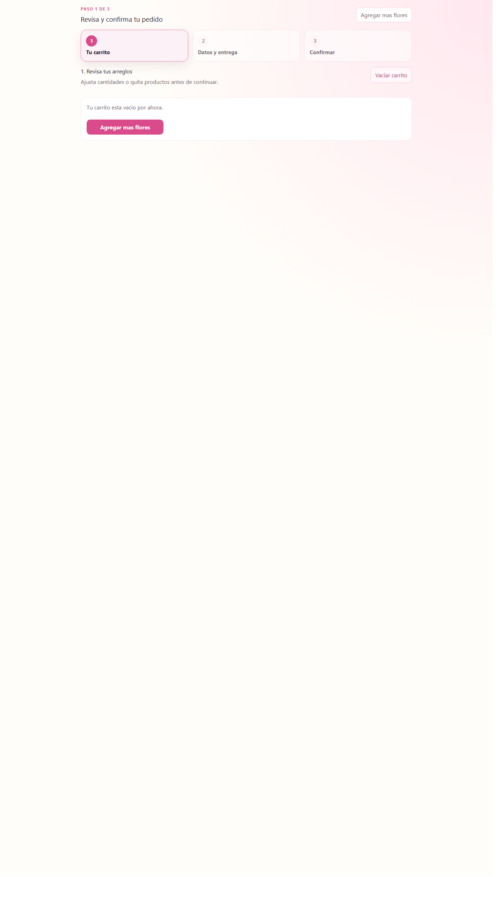

Manual de Usuario PetalOps
Aplicacion: PetalOps Catalogo Web
Perfil: Usuario final (cliente)
Marca: PetalOps
Indicativo internacional
Seleccione el indicativo de su país antes de ingresar el número de teléfono:
1. Objetivo
Este manual explica como usar PetalOps Catalogo Web para:
- Buscar productos florales.
- Filtrar por categoria.
- Agregar productos al carrito.
- Iniciar el proceso de pedido.
2. Ingreso al catalogo
Al abrir el enlace de PetalOps, veras la pantalla principal con barra de busqueda, categorias y productos disponibles.

Pantallazo 1. Vista principal de PetalOps Catalogo Web.
Acciones principales
- Usar la barra de busqueda para encontrar un arreglo por nombre.
- Seleccionar una categoria para filtrar resultados.
- Pulsar Anadir al carrito en el producto deseado.
3. Uso en celular
PetalOps Catalogo Web tambien funciona en dispositivos moviles. Los productos se ajustan en columnas mas angostas para facilitar la navegacion.

Pantallazo 2. Vista del catalogo en celular.
4. Carrito y proceso de pedido
Cuando ingresas al carrito, veras un flujo en 3 pasos:
- Tu carrito
- Datos y entrega
- Confirmar

Pantallazo 3. Pantalla del carrito y pasos del pedido.
Tip: Si el carrito esta vacio, selecciona Agregar mas flores para volver al catalogo y elegir productos en PetalOps.
5. Recomendaciones para usuario final
- Verifica nombre, telefono y direccion antes de confirmar.
- Si eliges domicilio, selecciona el barrio correcto para calcular envio.
- Conserva el numero de pedido al finalizar la compra.